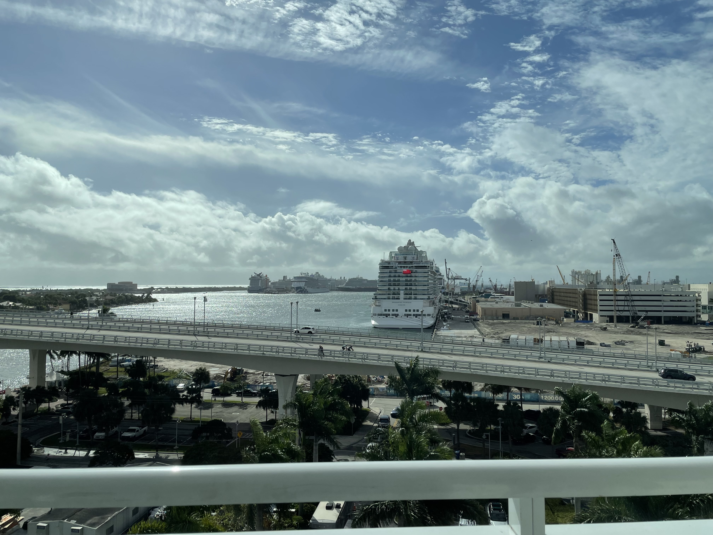

Select a link to go to its blog:
Las Vegas
[November 12, 2021] When we arrived at the Las Vegas airport we took a Lyft to our hotel and enjoyed a delicious pizza for dinner.
[November 13, 2021] For breakfast we went to the Bagelmania and tried their donuts. After that we had brunch at the Bellagio and shopped around a little bit. After we left the Bellagio we visted the Coke, M&M, and Hershey Stores and bought some candy at them.
Thanksgiving Cruise
[November 20, 2021] When we woke up in our hotel in Fort Lauderdale, we were ready as ever to board our cruise, the Odyssey of the Seas! There were also quite the amount of cruise ships waiting to board.

[November 21, 2021] After we woke up we headed to the Windjammer for some breakfast and I enjoyed some buffet bacon. Their bacon in the Windjammer is AMAZING! If you ever go on a Royal Carribean cruise, definetley check out the Windjammer. After breakfast we went to our reservation for the North Star, and it was pretty awesome to see Nassau from all the way up there.